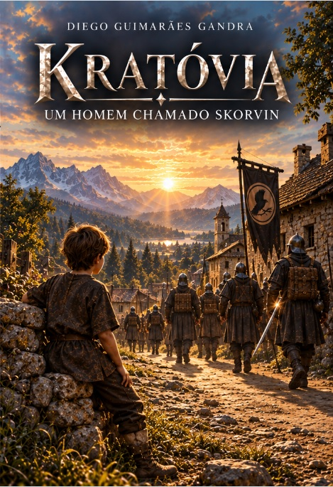
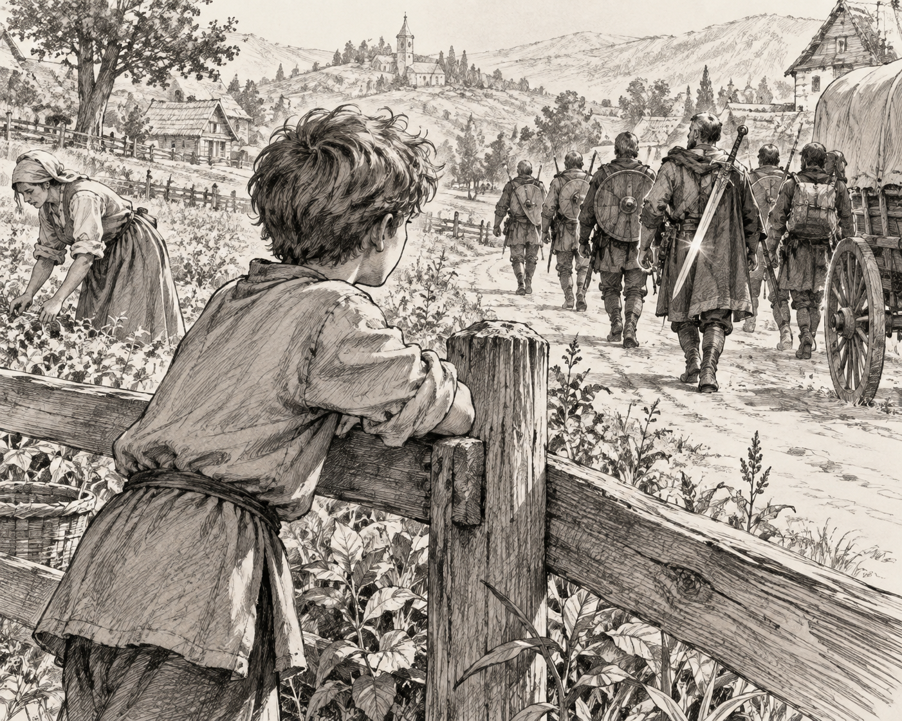
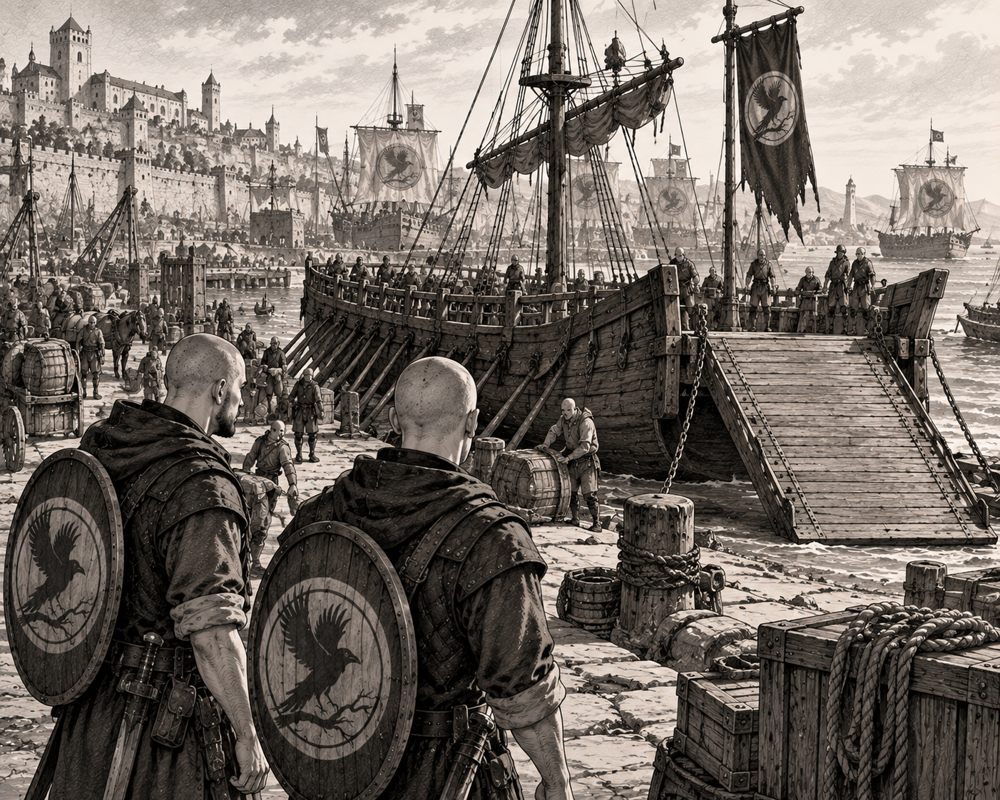
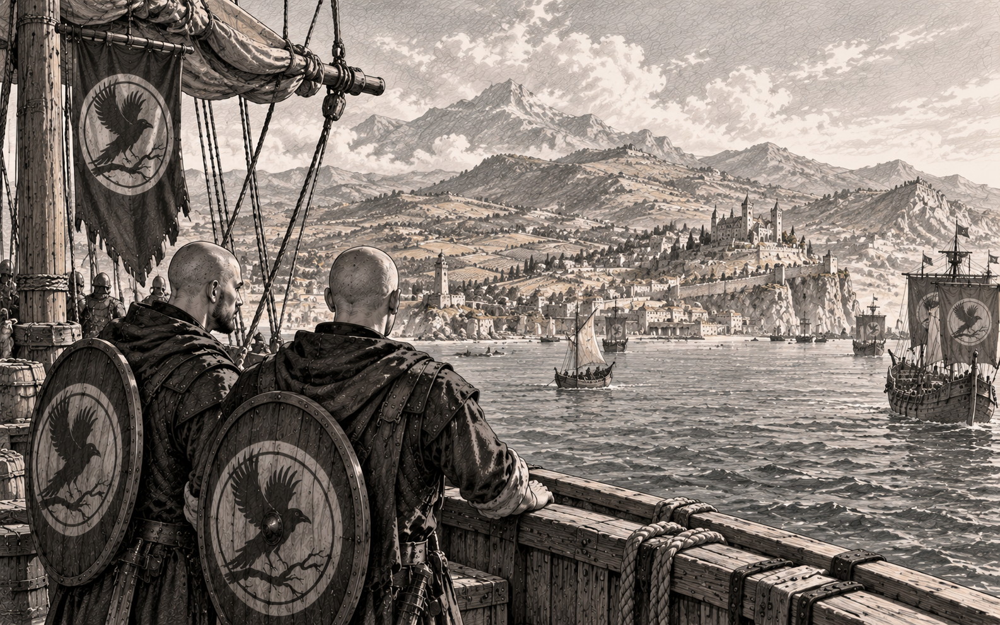
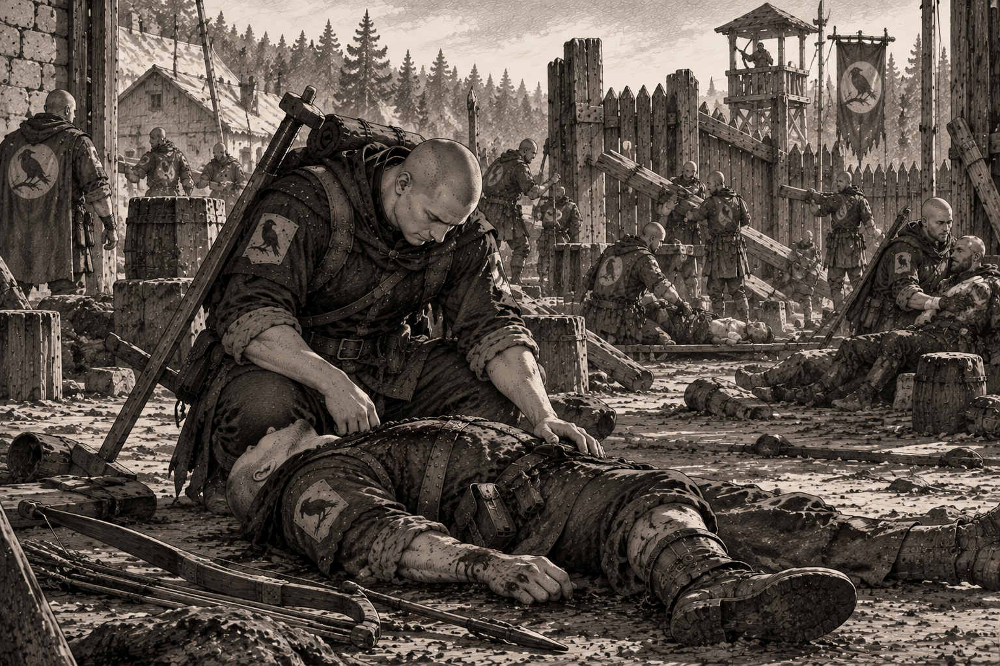
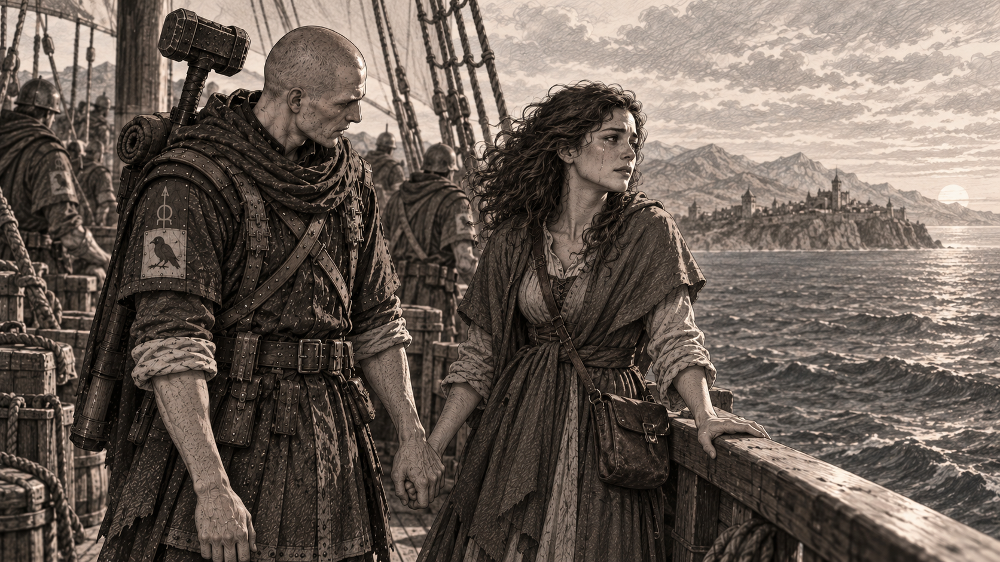

KRATÓVIA
Um Homem chamado Skorvin
Uma história do universo de ValeDouro vista do outro lado da fronteira.
Antes que ValeDouro tivesse esse nome, havia homens que olhavam para aquelas terras de outra maneira. Para Kratóvia, não se tratava do nascimento de um novo território, mas de terras que já pertenciam à sua própria história.
É nesse mundo que acompanhamos Skorvin. Sua trajetória permite conhecer Kratóvia por dentro — seus homens, sua disciplina, suas convicções e a maneira como acontecimentos que mais tarde seriam lembrados no Vale assumiam outro significado quando vistos do lado kratoviano.
POR TRÁS DA OBRA
A história muda quando muda o lado da fronteira.
O universo de ValeDouro foi construído para que sua história não tivesse apenas uma voz. Povos diferentes atravessam os mesmos acontecimentos carregando memórias, interesses e interpretações próprias.
Um Homem chamado Skorvin nasce dessa proposta. Em vez de observar Kratóvia apenas a partir daqueles que futuramente formariam ValeDouro, a narrativa atravessa a fronteira e acompanha personagens para os quais aquele território, seus conflitos e suas transformações possuem outro significado.
Skorvin torna-se uma porta de entrada para essa perspectiva. Por meio de sua trajetória, o leitor conhece uma sociedade marcada por organização militar, dever, expansão territorial e pela certeza de que suas fronteiras possuem uma legitimidade que será colocada em questão.
Isso não transforma uma perspectiva na resposta definitiva sobre o passado. Ao contrário: amplia o universo ao mostrar que a mesma história pode deixar registros muito diferentes dependendo de quem a viveu.
Em Kratóvia, o leitor não encontra simplesmente o outro lado de ValeDouro. Encontra pessoas que acreditam estar vivendo a sua própria história.
CONTEÚDO DIGITAL
Além das páginas.
Algumas imagens do livro, para seu deleite, leitor ou curioso.




